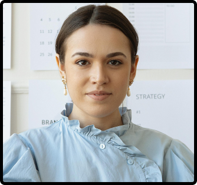

¿Por qué me gusta la programación?
Desde una cafetera hasta un PC gamer, el código lo mueve todo. Programar es unir diseño, lógica y experiencia en un solo clic.
Marisol – Full Stack Developer & UX Enthusiast
Apasionada por la experiencia del usuario y el desarrollo de aplicaciones completas. Marisol combina su talento en frontend y backend con una sensibilidad especial para crear productos funcionales y agradables de usar. En sus prácticas destacó por liderar proyectos con gran atención al detalle y una comunicación impecable. Siempre está buscando cómo mejorar la interacción entre humanos y tecnología.